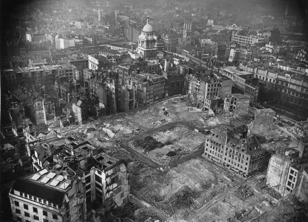
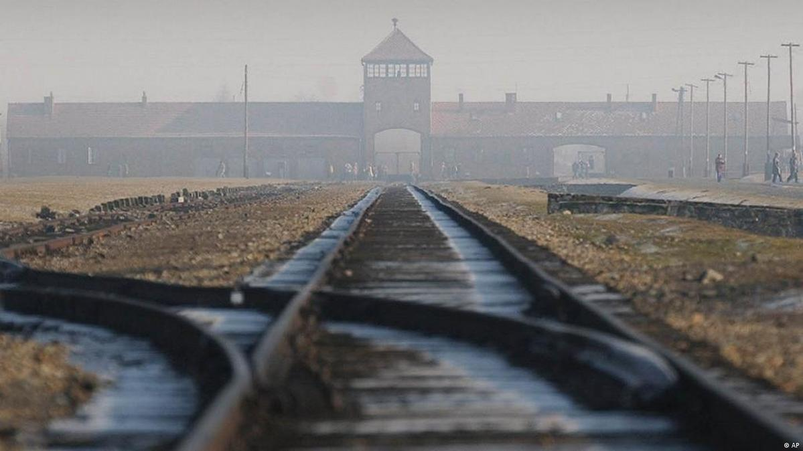
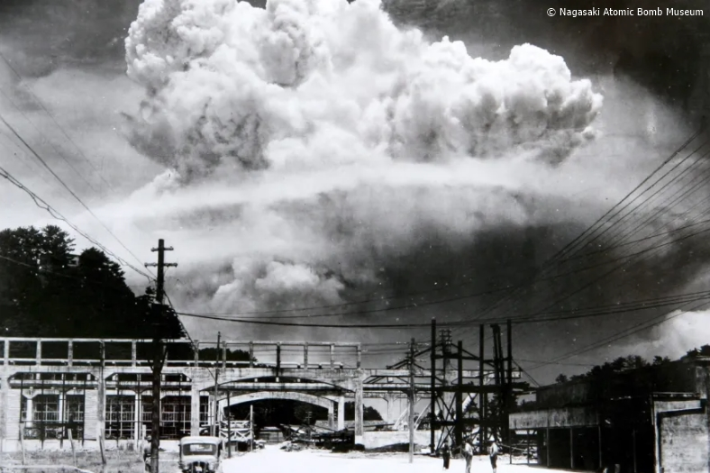

A Tempestade se Forma: a falência da diplomacia e a Blitzkrieg
A Segunda Guerra Mundial não foi um acidente ou um erro de cálculo, mas o
resultado inevitável de duas décadas de ressentimento, crises econômicas e da
ascensão de ideologias totalitárias dispostas a redesenhar o mapa do mundo
pela força. Durante os anos 1930, as democracias ocidentais (Inglaterra e França)
adotaram a chamada "política de apaziguamento". Traumatizadas pela carnificina da
Primeira Guerra Mundial, essas nações cederam repetidamente às exigências
agressivas de Adolf Hitler, permitindo que a Alemanha remilitarizasse a Renânia,
anexasse a Áustria (o Anschluss) e tomasse a Tchecoslováquia sem disparar um tiro.
Enquanto isso, no Brasil, o presidente Getúlio Vargas observava a escalada da
tensão com uma neutralidade pragmática, flertando economicamente tanto com a
Alemanha nazista quanto com os Estados Unidos para modernizar o parque industrial
brasileiro. No entanto, quando as tropas nazistas cruzaram a fronteira da Polônia
na madrugada de 1º de setembro de 1939, a ilusão da paz ruiu. Dois dias depois, a
guerra foi declarada, e a humanidade mergulhou no abismo.
A campanha na Polônia chocou o mundo por revelar uma nova e aterrorizante forma de
fazer guerra: a *Blitzkrieg* (Guerra-Relâmpago). Ao contrário do imobilismo das
trincheiras da Primeira Guerra, a doutrina militar alemã agora focava em velocidade,
surpresa e força concentrada. Formações massivas de tanques (Panzers) rasgavam as
linhas de defesa inimigas, apoiadas por bombardeios aéreos cirúrgicos da
*Luftwaffe* (a força aérea alemã), que destruíam centros de comunicação e
estradas, paralisando a capacidade de reação do adversário. Em questão de semanas, a
Polônia foi esmagada e dividida entre a Alemanha e a União Soviética, graças a um
pacto de não-agressão assinado secretamente entre Hitler e Stalin (o Pacto
Ribbentrop-Molotov), que garantiu que a Alemanha não lutasse em duas frentes
simultaneamente logo no início do conflito.
A Queda da Europa e a Resistência Solitária: a Batalha da Inglaterra

Após um período de inércia conhecido como a "Guerra de Mentira", a máquina de
guerra nazista voltou-se para o oeste na primavera de 1940. Dinamarca, Noruega,
Holanda e Bélgica caíram rapidamente. Mas o verdadeiro choque psicológico para as
democracias ocorreu em maio daquele ano, quando os Panzers alemães atravessaram a
impenetrável floresta das Ardenas, contornando a famosa Linha Maginot e cercando as
forças aliadas. Em apenas seis semanas, o exército francês — outrora considerado
o mais poderoso da Europa — desmoronou. As tropas britânicas tiveram que ser
evacuadas desesperadamente pelas praias de Dunquerque. Em junho, tropas nazistas
marcharam sob o Arco do Triunfo em Paris. Hitler dominava a Europa Continental, do
Círculo Polar Ártico até os Pirineus.
A única barreira que separava o Terceiro Reich da vitória total na Europa era o
Canal da Mancha e a teimosia do recém-empossado primeiro-ministro britânico,
Winston Churchill. Diante da ameaça iminente de uma invasão marítima (Operação
Leão Marinho), a Alemanha precisava primeiro destruir a Força Aérea Real britânica
(RAF) para garantir o controle dos céus. Ocorreu então a Batalha da Inglaterra, a
primeira grande campanha militar da história travada inteiramente no ar. Durante
meses, os céus ingleses foram preenchidos por combates mortais entre os caças
Spitfire e Messerschmitt, enquanto as cidades britânicas, especialmente Londres,
eram submetidas a bombardeios noturnos devastadores conhecidos como *The Blitz*.
No entanto, com o uso revolucionário do radar e a bravura de seus pilotos, a
Inglaterra resistiu, impondo a Hitler seu primeiro revés estratégico e mantendo
viva a última chama democrática no continente.
A Guerra se Torna Global: Barbarossa, Pearl Harbor e o Brasil no conflito
A frustração por não conseguir dobrar a Inglaterra levou Hitler a cometer o que
muitos historiadores consideram o seu maior e mais fatal erro de cálculo. Movido
pela necessidade de petróleo, grãos e por seu ódio ideológico e racial contra o
"judeu-bolchevismo", ele rasgou o pacto de não-agressão e ordenou, em 22 de junho
de 1941, a invasão da União Soviética. A Operação Barbarossa foi a maior
mobilização militar da história humana, envolvendo mais de três milhões de soldados
do Eixo cruzando as fronteiras russas. Inicialmente, o avanço foi avassalador, com
milhões de soldados soviéticos cercados, capturados ou mortos. Porém, a vastidão do
território russo, a tática da "terra arrasada" e o implacável General Inverno
paralisaram a ofensiva nazista às portas de Moscou. O conflito tornou-se uma guerra
de atrito brutal.
Enquanto a Europa sangrava, o teatro de operações expandia-se dramaticamente. Em 7
de dezembro de 1941, o Japão atacou a base americana de Pearl Harbor, arrastando os
Estados Unidos para o conflito. Essa globalização da guerra tornou impossível a
manutenção da neutralidade do Brasil. Com o Atlântico infestado de submarinos
alemães (U-Boats) tentando cortar as rotas de suprimentos dos Aliados, navios
mercantes brasileiros foram impiedosamente torpedeados em 1942, resultando na morte
de centenas de civis. A indignação popular tomou as ruas do Rio de Janeiro e de
São Paulo. Sem alternativa e já alinhado economicamente aos EUA (que financiaram a
construção da CSN em Volta Redonda), Getúlio Vargas declarou guerra ao Eixo,
inserindo definitivamente a América do Sul no maior conflito armado da história.
O Abismo Moral da Humanidade: A "Solução Final" e o Holocausto

Por trás do estrondo dos canhões e das movimentações de fronteira, desenrolava-se nos
bastidores do Terceiro Reich uma engrenagem de maldade metódica que mudaria para
sempre a compreensão moral da humanidade. O antissemitismo, que começou com discursos
de ódio e segregação civil através das Leis de Nuremberg na década de 1930,
transformou-se em perseguição física e guetização após o início do conflito. Porém,
em janeiro de 1942, na Conferência de Wannsee, nos arredores de Berlim, a alta
cúpula burocrática nazista formalizou o que chamaram cinicamente de "Solução Final
para a Questão Judaica". O objetivo do Estado alemão deixou de ser apenas a expulsão,
passando a ser o extermínio físico, sistemático e industrializado de todos os judeus
europeus.
Para executar esse genocídio, a tecnologia logística da sociedade moderna — ferrovias,
arquivos perfurados, indústria química e engenharia arquitetônica — foi canalizada
exclusivamente para a morte. Centenas de milhares de judeus, ciganos, homossexuais,
opositores e minorias foram enviados para Campos de Extermínio na Polônia ocupada,
como Auschwitz, onde eram assassinados em câmaras de gás. Apesar do terror imposto
pela SS, houve focos luminosos de humanidade pelo mundo. O Brasil, mesmo sob as
restrições imigratórias da ditadura do Estado Novo, viu a coragem de figuras como
Aracy de Carvalho, diplomata brasileira em Hamburgo. Arriscando a própria vida e
contrariando ordens do governo Vargas, Aracy emitiu centenas de vistos secretos
para o Brasil, salvando inúmeros judeus da câmara de gás e provando que a empatia
podia resistir até no epicentro do terror nazista.
O Eixo Quebra: Stalingrado e o avanço Aliado na Europa
O pêndulo militar começou a pender contra as potências do Eixo entre o final de 1942 e
o início de 1943. O divisor de águas indiscutível na Europa foi a Batalha de
Stalingrado. O que começou como um objetivo estratégico para alcançar o petróleo do
Cáucaso transformou-se em uma obsessão entre Hitler e Stalin. Em um combate urbano
selvagem, o Exército Vermelho soviético cercou e destruiu o poderoso 6º Exército
alemão. A rendição nazista em fevereiro de 1943 quebrou o mito da invencibilidade
alemã e iniciou o rolo compressor soviético que empurraria a Alemanha lentamente de
volta para Berlim.
Enquanto os soviéticos avançavam no leste, as forças anglo-americanas abriam caminho
pelo sul, invadindo a Itália e derrubando Mussolini. Foi exatamente neste cenário
montanhoso e inóspito que o Brasil marcou sua presença no campo de batalha. A Força
Expedicionária Brasileira (FEB), composta por mais de 25 mil "pracinhas", foi
enviada à Itália em 1944. Integrados ao 5º Exército Americano e sob o emblema de
uma "Cobra Fumando" (ironizando os céticos que diziam que o Brasil jamais iria à
guerra), os brasileiros enfrentaram um frio rigoroso e a resistência fanática dos
alemães. Com vitórias heroicas em Monte Castello, Montese e Fornovo di Taro, o
Brasil ajudou a romper a Linha Gótica, consolidando o avanço aliado no sul da Europa,
enquanto o estrondoso desembarque do "Dia D" na Normandia prensava a Alemanha pelo
oeste.
A Queda de Berlim, o Amanhecer Atômico e os ecos políticos

No final de abril de 1945, a Alemanha nazista agonizava. Berlim tornou-se um campo de
batalha apocalíptico sob o peso ininterrupto da artilharia soviética. Refugiado em seu
*Führerbunker* subterrâneo e recusando-se a aceitar a realidade, Adolf Hitler cometeu
suicídio no dia 30 de abril. Em 8 de maio, a guerra na Europa terminava com a rendição
incondicional alemã. No entanto, o Império Japonês recusava-se a ceder, prometendo
lutar até o último homem em seu território através de ataques kamikazes. Diante da
perspectiva de milhões de baixas em uma invasão por terra, os EUA decidiram utilizar
as armas nucleares desenvolvidas pelo Projeto Manhattan. O lançamento das bombas sobre
Hiroshima (6 de agosto) e Nagasaki (9 de agosto) incinerou as cidades em frações de
segundo, forçando a rendição japonesa e inaugurando o terror da Era Atômica.
A Segunda Guerra Mundial chegou ao fim deixando cerca de 60 milhões de mortos e um
mundo fraturado. O fim do conflito não trouxe apenas uma nova geopolítica global,
dominada pela rivalidade entre EUA e União Soviética (a Guerra Fria), mas também
abalou profundamente as estruturas internas de países aliados, como o Brasil. A
vitória das democracias sobre o nazifascismo expôs uma contradição insustentável
em território nacional: como o governo brasileiro poderia celebrar a morte de
ditadores na Europa se o próprio Getúlio Vargas comandava o país com mão de ferro
sob a censura do Estado Novo? Esse paradoxo histórico alimentou a pressão da
sociedade civil e dos próprios militares que retornaram da Itália, resultando na
deposição pacífica de Vargas em outubro de 1945 e no retorno do Brasil ao
caminho da democracia, provando que os ecos da grande guerra haviam transformado
definitivamente o destino político do país.